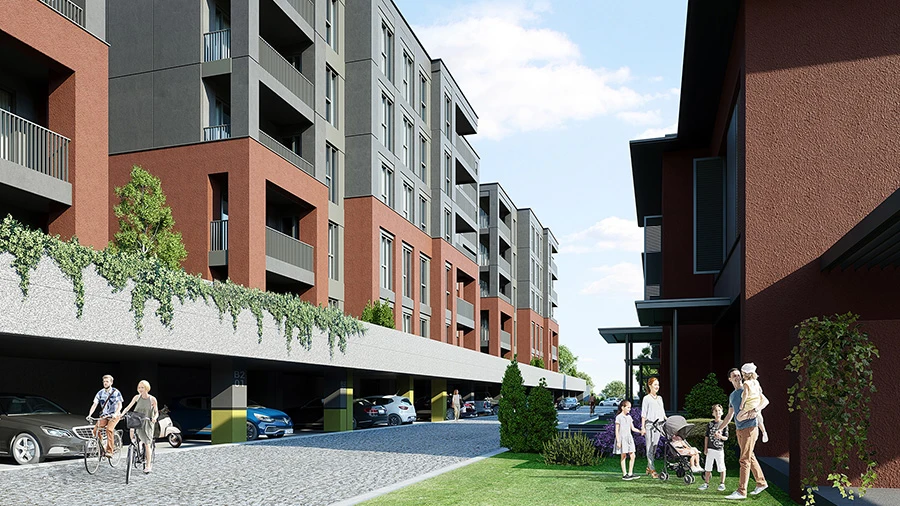

Liv Bahçeşehir
A residential development in Bahçeşehir combining apartments and garden villas. The published project information describes 45 apartments and 30 villas within a landscaped site.
Photo gallery

Official architectural illustrations; these images do not show the current construction condition.
Living spaces
The project presentation highlights private gardens, landscaped walking spaces, children’s outdoor areas, indoor parking and security. Apartment and villa layouts cater to different household needs.
Bahçeşehir · Başakşehir · Istanbul
Bahçeşehir 1. Kısım, Başakşehir, on Istanbul’s European side. Compare local parks, schools and your daily routes when arranging a viewing.
Choose your home
Request the current apartment selection, price and payment options. Compare the exact unit, view and included services before arranging your purchase.